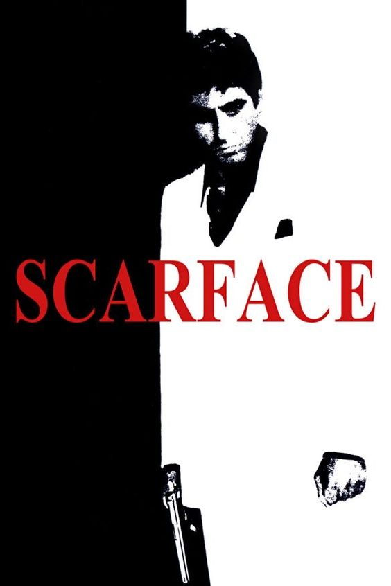

|  | Scarface
Direção: Brian De Palma
Roteiro Oliver Stone, Ben Hecht
Elenco: Al Pacino, Michelle Pfeiffer, Steven Bauer
Após receber residência permanente nos Estados Unidos em troca do assassinato de um oficial do governo cubano, Tony Montana se torna o chefe do tráfico de drogas em Miami. Matando qualquer um que entre em seu caminho, Tony eventualmente se torna o maior traficante da Flórida, controlando quase toda a cocaína que entra em Miami. Porém, a pressão da polícia, as guerras com cartéis colombianos e sua própria paranoia servem para alimentar as chamas de sua eventual queda. |
|
Acesse mais em YouTube SESSÕES
|